Origami Alpaca Instructions Easy Step by Step

Step 1
: Fold the top corner to the bottom corner.
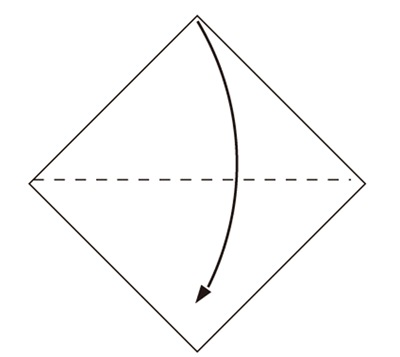
Step 2
: Fold the right corner to the left corner.
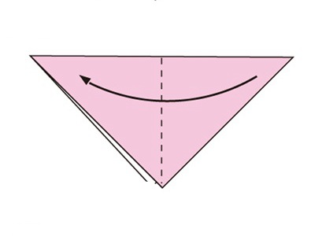
Step 3
: Open at the arrow and flatten.
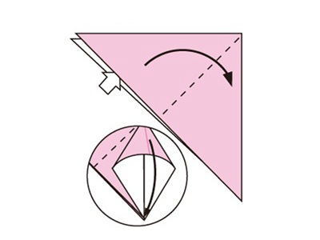
Step 4
: Turn over.
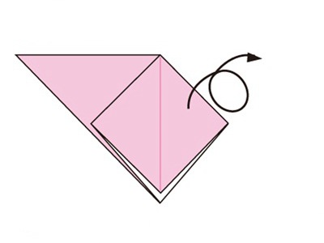
Step 5
: Open at the arrow and flatten.
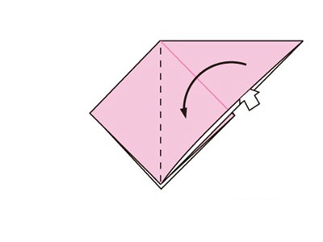
Step 6
: Fold and unfold to make creases on the dotted line.
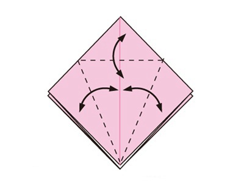
Step 7
: Open at the arrow to pull up the upper layer, and flatten
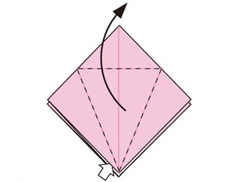
Step 8
: Back is the same.
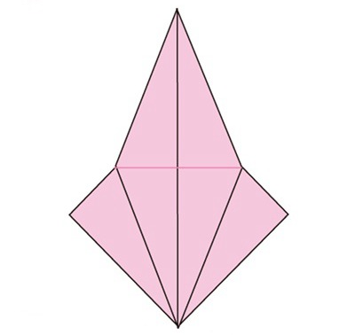
Step 9
: Open and pull.
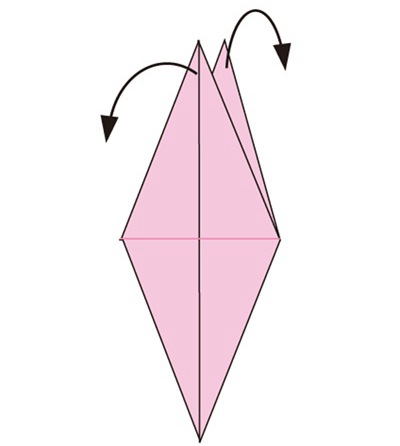
Step 10
: Fold in half.
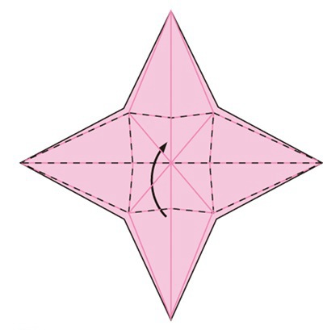
Step 11
: Pocket fold.
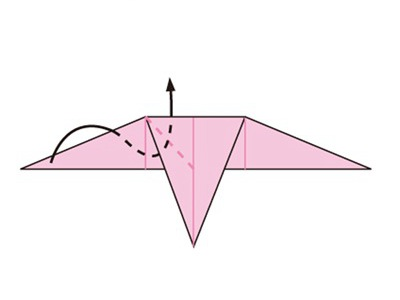
Step 12
: Hood fold.
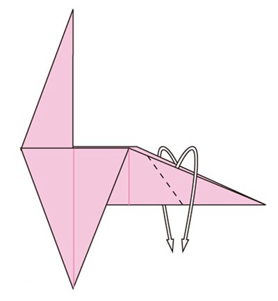
Step 13
: Fold along the dotted line and back is the same.
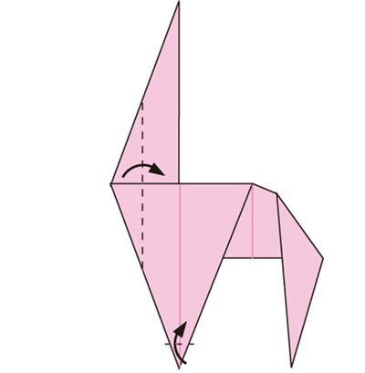
Step 14
: Open the back side.
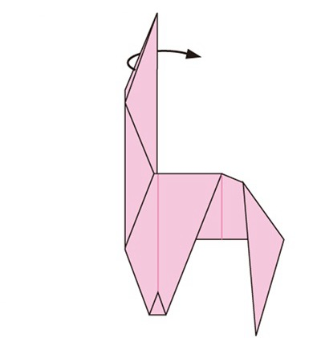
Step 15
: Roll and fold back.
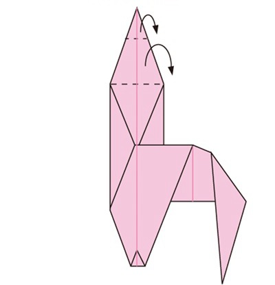
Step 16
: Fold the top edge down along the dotted line.
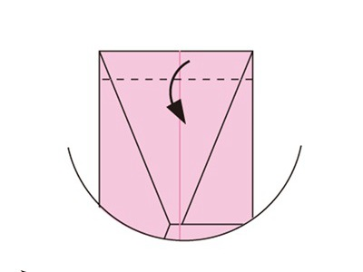
Step 17
: Fold along the dotted line.
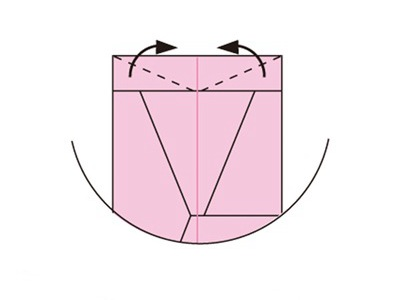
Step 18
: Ear is finished.
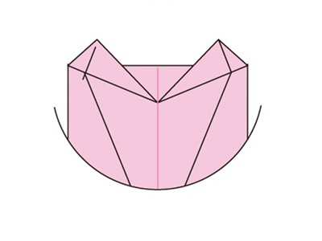
Step 19
: Fold the behind part to the left, and the left part to the right.
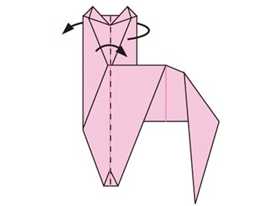
Step 20
: Make a pocket fold.
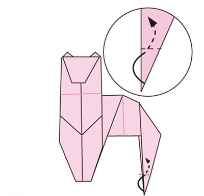
Step 21
: Draw a face and complete.
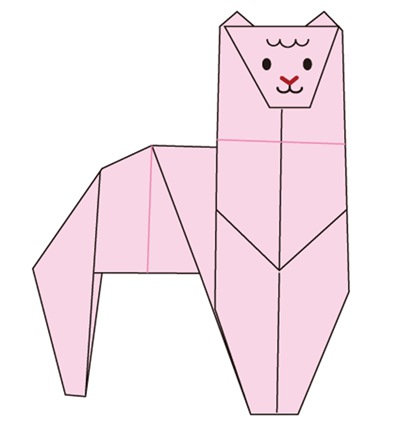
Now you know how to make a paper alpaca! Easy wasn’t it?Like this project if you like this origami!